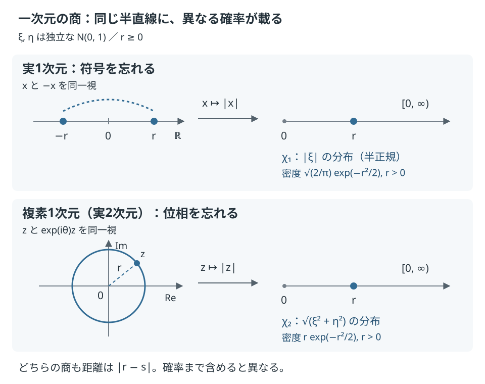

私の指導教員である塩谷隆先生との共著論文「Hopf quotients of the infinite-dimensional Gaussian pyramid」の解説。
数学的な出典はarXiv:2609.07030v2（2026年9月24日）に固定している。
微積分・線形代数と、確率変数の期待値・分散、基本的な証明の読み方を前提にする。
中心となる証明では、近似を作る写像、必要な収束、最後に矛盾する数値までを順にたどる。
ガウス解析や空間の収束について使う既知の定理は、使える形で述べ、証明を省く範囲を明示する。
何を忘れるかが、極限にも残る
標準正規分布N(0,1)は、密度(2π)−1/2e−t2/2をもつ実数上の確率分布だ。
正整数nについて、独立なn個の標準正規変数の同時分布をγnと書く。
ユークリッド距離を備えたRnにこの確率を載せたものが、標準ガウス空間
Γn=(Rn,∥⋅∥2,γn)
になる。ここでは距離だけでなく、どこにどれだけ確率があるかも幾何の一部として扱う。
この空間でxと−xを同一視すると、ベクトル全体の符号を忘れた空間Γn/Z2ができる。
一方、CnをR2nとみなし、実部と虚部の各座標に独立なN(0,1)を載せた空間をΓCnと書く。
こちらでzとeiθzをすべて同一視すると、共通の位相を忘れた空間ΓCn/U(1)ができる。
ここでZ2={1,−1}、U(1)={eiθ:θ∈R}だ。
座標ごとに別々の符号や位相を変えるのではなく、すべての座標に同じ変換を施している。
同一視した点の集まりを軌道[x]と呼ぶ。商空間の距離と確率は、群Gに対して
dX/G([x],[y])=g∈GinfdX(x,gy),μX/G=(πG)∗μX
で定める。πG(x)=[x]は商写像で、押し出し測度f∗μとは、μに従って選んだ点をfで写したときの分布のことだ。
実数の場合の距離はmin{∥x−y∥2,∥x+y∥2}、複素数の場合はinfθ∥z−eiθw∥2になる。
これが論文で比較する有限次元モデルだ。§1.2
まず、実数一つと複素数一つで見る
実数一つなら、軌道は{x,−x}なので、[x]を∣x∣と対応させると商は半直線になる。
二つの軌道の距離は
min{∣x−y∣,∣x+y∣}=∣x∣−∣y∣
だから、半直線の通常の距離そのものだ。
その上の確率はξ∼N(0,1)に対する∣ξ∣の分布で、半正規分布と呼ばれる。
複素数一つなら、位相の軌道は原点中心の円だ。[z]を半径∣z∣に対応させると、やはり半直線になり、距離は
θinf∣z−eiθw∣=∣z∣−∣w∣
になる。下界は三角不等式から従い、偏角をそろえるとその下界を実現できる。
ただし、ここに載る確率は∣ξ+iη∣=ξ2+η2の分布になる。
ξ,ηは独立なN(0,1)なので、同じ半直線でも実数の商とは確率が異なる。
この二つの半径の分布をそれぞれχ1,χ2と書く。

図を拡大して見る
図はこの二つの商を定義から描いたものだ。
Φ(r)=P(ξ≤r)を標準正規分布の分布関数とする。
r>0における密度と、r≥0における分布関数は
∣ξ∣ξ2+η2密度2/πe−r2/2re−r2/2P(半径≤r)2Φ(r)−11−e−r2/2
となる。
二行目のrという因子は、平面で半径rからr+drまでの円環の面積が2πrdrになることから現れる。
これは商を理解するための一次元の例で、後に証明する無限次元の非相似性をこの図だけで結論しているわけではない。
§1.2、Lemmas 2.12–2.13
次元を増やした極限でも、「符号を忘れること」と「位相を忘れること」は異なるのか。
さらに距離の単位を変える自由を認めても、元のガウス空間を含めた三者を区別できるのか。
論文のTheorem Aは、この三者がどの二つも相似でないことを示す。
その意味を正確にするため、まず極限を表す「ピラミッド」を用意する。
証明で最も力を使うのは、二つの商の比較だ。
まず変動と裾を測る二つの数値を計算すると、元のガウス空間と商の違いが分かる。
ところが商同士では数値が一致するため、半正規分布をもつ半直線を取り出せるか、という別の問いに移る。
その半直線が極限に含まれると仮定し、観測の二乗を二次式に近づけると、位相の対称性に反する三次モーメントが現れる。
一つの空間から得られる観測を集める
距離と確率を備えた空間をmm空間と呼ぶ。正確には、完備可分距離空間Xと、その上のBorel確率測度μXの組だ。
完備とは、点同士の距離が十分先でいくらでも小さくなるCauchy列が空間の中に極限をもつこと、可分とは、可算個の点で空間全体を任意の精度で近似できることをいう。
Borel確率測度は、開集合から可算回の和・補集合などで作る集合に定まった確率のことで、μX(X)=1を満たす。
以下では、どの近傍も正の確率をもつ点の集合である「測度の台」の上で空間を考える。
f:Y→Xが距離を増やさず、すなわち
dX(f(y),f(y′))≤dY(y,y′)
を満たし、さらにf∗μY=μXとなるとき、X≺Yと書く。
これはYから距離を増幅せずにXの距離と確率を取り出せる、という関係だ。
例えばΓnから最初の座標を取り出す写像は、Γ1≺Γnを与える。
写像は全単射である必要がない。高次元の空間から一座標だけを見る例では、多くの点が同じ観測値に重なる。
それでも、その観測値の分布と値同士の距離は残る。
実数値の距離を増やさない関数を、以下では1-Lipschitz観測と呼ぶ。
一般に、関数値の差が距離のL倍以下となる有限の定数Lがある関数をLipschitz関数と呼び、そのようなLの最小値をLipschitz定数という。
Definition 1.3
空間Yから得られるmm空間をすべて集めて
PY={X:X≺Y}
とする。このような集まりを扱う枠組みがピラミッドだ。
一般のピラミッドは、mm空間を確率を保つ全単射の等長写像で同一視した非空な族で、次の三条件を満たす。
ここで等長写像とは、どの二点の距離もそのまま保つ写像だ。
- 族に入る空間からさらに≺で取り出した空間も、族に入る。
- 族の任意の二つの空間は、族の中の共通の一つの空間から取り出せる。
- box距離での極限を取っても、族から出ない。
box距離は、二つの空間からの点の選び方を共通の確率変数で表し、大部分の点の組について距離が一様に近くなるかを測る。
ここで「極限を含める」という操作が後の証明で重要になる。
Definitions 1.1–1.4
box距離の定義
I=[0,1)にLebesgue確率測度を入れる。φ:I→Xとψ:I→Yは、それぞれの空間の確率を実現するBorel写像とする。
すなわちφ∗L1=μX、ψ∗L1=μYだ。
あるBorel集合I0⊂IについてL1(I0)≥1−εかつ
∣dX(φ(s),φ(t))−dY(ψ(s),ψ(t))∣≤ε(s,t∈I0)
とできるε≥0の下限を□(X,Y)と呼ぶ。
「box閉包」は、この距離で近づく空間も加えた集合を意味する。Definition 1.2
三つの極限は、それぞれ有限次元の観測可能な空間を集め、そのbox閉包を取って定義する。
Γ∞Γ∞/Z2Γ∞/U(1)=n≥1⋃PΓn,=n≥1⋃PΓn/Z2,=n≥1⋃PΓCn/U(1).
座標を一つ捨てる写像は距離と確率の条件を保つため、それぞれの和集合は次元とともに増えていく。
この定義では、無限個の独立な正規変数を通常のユークリッド空間の一点として扱う必要がない。
比較する対象は、上の式で定めたmm空間の族だ。§1.2
例えば符号商の族にXが入るとは、有限次元の符号商から直接Xが取り出せる場合だけでなく、
取り出せる空間の列がXへbox距離で近づく場合も含む。
「どの有限次元でも作れない」と示しても、この近似の可能性はまだ残る。
証明の後半で次元によらない評価が必要になるのは、このためだ。
ピラミッドの弱収束で何を要求するか
mm空間XとピラミッドPについて□(X,P)=infY∈P□(X,Y)とおく。
ピラミッドの列PnがPへ弱収束するとは、
X∈Pなら□(X,Pn)→0、
X∈/Pならliminfn□(X,Pn)>0となることだ。
極限に入る空間は近似でき、入らない空間とは正の距離が残る、という二つの条件になる。
Definition 1.5
ここで定義した三つの増大列は、それぞれ和集合のbox閉包へこの意味で弱収束する。
この収束の事実は論文の§1.2で述べられるピラミッド理論の性質として用いる。
各空間の点が同じ集合の上で収束するという意味ではない。
ピラミッドPのすべての距離をa>0倍したものをaPと書く。
aP=Qとなるa>0があるとき、二つは相似だ。
Theorem Aの主張は、この距離の単位変更をしても三つの族が一致しない、ということになる。
まず、変動の大きさと遠い裾を測る
証明は二つの数値を調べるところから始まる。
第一はPoincaré定数C2,2で、観測値の分散を、観測の局所的な変化の大きさで制御する最小の定数だ。
mm空間Xでは、有界Lipschitz関数f:X→Rすべてに対して
VarμX(f)≤C2∫Xlipa(f)2dμX
が成り立つ非負の定数Cの下限を取る。ここでVarμX(f)=∫X(f−∫XfdμX)2dμXだ。
lipa(f)(x)は、xの半径rの球上でのLipschitz定数をr↓0とした極限を表す。
滑らかなユークリッド空間の関数なら、これは勾配の長さ∥∇f(x)∥2に対応する。
右辺の積分を「エネルギー」と呼ぶのは、関数が急に変わる場所ほど、勾配の二乗を通して大きく数えられるからだ。
定数Cが小さい空間ほど、同じエネルギーで作れる分散が小さい。
ピラミッドでは、その中の空間の定数の上限を取り、C2,2(P)=supX∈PC2,2(X)とする。
Definition 1.6
第二は、確率の大きな部分と小さな裾をどこまで離せるかだ。
Sep(X;α,β)を、確率がそれぞれα,β以上ある二つのBorel集合A,Bについて、集合間距離infx∈A,y∈BdX(x,y)の上限とする。
ピラミッドでは
Sep(P;α,β)=δ↓0limX∈PsupSep(X;α−δ,β−δ)
と定める。ここでは0<α,β≤1、極限では0<δ<min{α,β}とする。
確率の条件を少し緩めてから極限を取るのが、ピラミッド上の定義だ。
Definitions 1.7–1.8
距離をa倍するとC2,2もSepもa倍になる。
そこで0<C2,2(P)<∞のとき
ΘPI(P)=κ↓0limsupC2,2(P)2log(1/κ)Sep(P;1/2,κ)2
を考える。分子と分母の距離の単位が打ち消されるので、これは相似でも変わらない。
計算結果は次の通りだ。ガウスのPoincaré定数1は論文が引用する既知の結果で、二つの商の定数がTheorem B、分離係数の三つの値がTheorem Cに当たる。
| ピラミッド | C2,2 | ΘPI |
|---|
| Γ∞ | 1 | 2 |
| Γ∞/Z2 | 1/2 | 4 |
| Γ∞/U(1) | 1/2 | 4 |
ΘPIの違いで、元のガウスピラミッドはどちらの商とも相似でないと分かる。
一方、二つの商はこの二つの数値が完全に一致する。そこをどう区別するかが、証明の後半の課題になる。
Poincaré定数だけが異なる場合は、距離を拡大・縮小して値を合わせられる。
この段階で相似を排除するには、距離の単位が消えたΘPIまで調べる必要がある。
符号の対称性が、一次の変動を消す
商空間上の観測を商写像で元のガウス空間に引き戻すと、Z2の商ならf(−x)=f(x)を満たす偶関数、U(1)の商なら位相回転で不変な関数になる。
後者も−1∈U(1)なので偶関数だ。
逆に、不変な1-Lipschitz関数は商空間上の1-Lipschitz関数になる。
したがって、商の幾何を調べる問題は、不変なガウス観測を調べる問題へ移る。Lemma 2.1
この逆向きは距離の定義から確かめられる。不変な関数fに対してfˉ([x])=f(x)と置くと、代表元を変えても値は変わらない。
任意のg∈Gについて
∣fˉ([x])−fˉ([y])∣=∣f(x)−f(gy)∣≤dX(x,gy)
なので、右辺のgに関する下限を取れば商距離に対する1-Lipschitz性を得る。
商では同じ軌道内の変動が消えることが、引き戻した関数の不変性として表れる。
ガウス解析では、関数をHermite多項式の次数ごとに直交分解できる。
ここで関数の内積は∫uvdγn、1≤p<∞に対するLpノルムは∥u∥Lp(γn)=(∫∣u∣pdγn)1/pだ。
特にL2は二乗の積分が有限な関数の空間を表す。
定数の成分が次数0、座標関数xiの成分が次数1、xi2−1やxixk（i=k）の成分が次数2だ。
例えばEξ2=1なので、ξ2から定数成分を除くとξ2−1になる。
さらにξ3の一次成分まで除くとξ3−3ξになる。
ここでいう次数は、このように低い次数の成分を引いて直交化した多項式の次数だ。
次数mの成分への直交射影をPmと書くと、二乗可積分な関数はこれらの成分の和に分かれる。
「直交」は関数の内積が0という意味で、Pmuは次数mの部分空間の中でuにL2距離が最も近い関数でもある。
弱微分は、部分積分の公式を使って通常の微分を拡張したものだ。今回扱う局所Lipschitz関数では、ほとんど至る所での通常の微分と一致する。
関数とその弱微分が二乗可積分なとき、勾配のエネルギーは
∫∥∇u∥22dγn=m≥1∑m∥Pmu∥L2(γn)2
となる。この恒等式をここではガウス解析の道具として用いる。
関数とその弱微分が二乗可積分である関数の空間をW1,2(γn)と書く。
次数の高い成分ほど、同じ大きさの変動を作るために多くのエネルギーを要する。
§2.3、Lemmas 2.7–2.8
Hermite分解と、ここで使う解析の定理
一変数のHermite多項式Hekは
etx−t2/2=k=0∑∞Hek(x)k!tk
の係数として定まる。最初の四つは1,x,x2−1,x3−3xだ。
多変数では、非負整数の組α=(α1,…,αn)について
∏iHeαi(xi)を用い、その次数は∣α∣=∑iαiとする。
同じ次数のものが張る空間をHmと書く。これが第m次Wiener chaosで、PmはHmへの直交射影だ。
「chaos」はここではこの関数空間の名前である。
使う既知の定理は二つある。
第一に、これらの多項式はL2(γn)の完全な直交系をなし、
u=m≥0∑Pmu(L2で収束),∥u∥22=m≥0∑∥Pmu∥22
となる。第二に、uとその弱微分が二乗可積分なら、本文のエネルギー恒等式が成り立つ。
弱微分とは、滑らかでコンパクトな台をもつ試験関数φすべてに対して
∫u∂iφdx=−∫(∂iu)φdxを満たす意味での微分だ。
このページでは完全性と一般のW1,2関数に対するエネルギー恒等式の証明は省く。
公開v2も、完全性は§2.3の式(2.7)でNualart [8, Theorem 1.1.1]を、エネルギー恒等式はLemma 2.8で同書のProposition 1.2.2を用いている。
一変数の例u=x2−1では、∥u∥22=3−2+1=2、
∫∣u′∣2dγ1=4Eξ2=4なので、次数2がエネルギーの係数2として現れることを直接確かめられる。
偶関数には奇数次数がなく、平均を引けば次数0も消える。
実際、次数が奇数のHermite多項式vに対し、x↦−xで変数変換すると
∫uvdγn=−∫uvdγnだから内積は0だ。
最初に残れるのは次数2なので、上式から
2Varγn(u)≤∫∥∇u∥22dγn
を得る。これが二つの商に共通するC2,2≤1/2の理由だ。
商で測った局所的な変化の大きさは引き戻した勾配以上なので、この不等式を商のPoincaré不等式へ移せる。
逆向きには、実n次元のガウスで∥x∥22−nを用いる。
これは符号反転で不変で、分散が2n、勾配エネルギーが4nになる。
複素n次元では∥z∥22−2nを使い、分散4n、勾配エネルギー8nを得る。こちらは位相回転で不変だ。
定義が有界関数を要求するため、上下を切り詰めた関数を使ってから切り詰めを外す。
こうして有限次元で等号となり、その一定値をピラミッドの極限に移す。
Lemma 2.9、Proposition 3.2、Lemma 3.1とTheorem Bの証明
商の定数を厳密に上下から挟む
上界では、商上の有界Lipschitz関数fˉをf=fˉ∘πGに引き戻す。
分布は同じなので分散も同じだ。商写像は距離を増やさないため、球上のLipschitz定数を比べると
lipa(f)(x)≤lipa(fˉ)([x])となる。
Lipschitz関数の勾配には∥∇f∥2≤lipa(f)がほとんど至る所で成り立つので、
Var(fˉ)=Var(f)≤21∫∥∇f∥22dγ≤21∫lipa(fˉ)2dμX/G.
ここでγは実数の場合のγn、複素数の場合のγ2nを表す。
実数の場合の下界には、R>0と切り詰めτR(t)=max{−R,min{t,R}}を使い、
hR([x])=τR(∥x∥22−n)と置く。
切り詰められずに変化する場所では∥x∥22<n+Rだから、hRは有界なLipschitz関数になる。
R→∞のとき、分散は2nへ収束し、局所変化量の二乗積分は4nへ収束する量で上から押さえられる。
従って任意の許されるPoincaré定数Cに対し2n≤C24nを得て、C2≥1/2になる。
複素数の場合は実座標が2n個あるので、同じ計算で4n≤C28nになる。
Proposition 3.2の証明
最後に使う収束の定理は次の形だ。
PYn⊂Pで、PYnがPへ弱収束し、すべてのnでC2,2(Yn)=C0なら、
C2,2(P)=C0である。
これは公開v2のLemma 3.1がEsaki–Kazukawa–Mitsuishi [2, Lemma 3.2]から用いる既知の結果で、その証明はここでは省く。
今回の二列は先に定義した増大列で、有限次元の値がどちらも一定の1/2なので適用できる。
裾までの距離から、係数4を決める
Φ(t)=P(ξ≤t)（ξ∼N(0,1)）を標準正規分布の分布関数とする。
元のガウスピラミッドでは、0<κ≤1/2に対して
Sep(Γ∞;1/2,κ)=Φ−1(1−κ)
となる。上界を与えるのはガウス等周不等式で、確率が半分以上の集合を距離tだけ膨らませると、確率は少なくともΦ(t)まで増える。
したがって、それと距離t以上離れた確率κの集合を置くには、κ≤1−Φ(t)が必要だ。
逆向きには一座標上の二つの半直線で等号を実現できる。
有限次元からピラミッドへの移行も含めた計算がProposition 4.1だ。
等周不等式から分離距離を計算する
使うガウス等周不等式は、可測集合A⊂Rnとt>0に対し、
At={x:d(x,A)<t}と置くと
γn(At)≥Φ(Φ−1(γn(A))+t)
となる、という定理だ。Theorem 2.2
同じ確率をもつ集合の中で、半空間（一つの一次不等式で定まる領域）が膨らませた後の確率を最小にする、と読める。
この定理の証明は省く。公開v2はBorell [1]、Sudakov–Tsirel'son [19]を出典にしている。
0<α,β、α+β≤1とし、A,Bの確率がα,β以上、距離がr以上だとする。
0<t<rならAt∩B=∅なので
β≤1−γn(At)≤1−Φ(Φ−1(α)+t).
Φは狭義単調増加だから、t≤Φ−1(1−β)−Φ−1(α)になる。
t↑rとして距離の上界を得る。
下界はA={x1≤Φ−1(α)}、B={x1≥Φ−1(1−β)}で実現する。
どちらの確率も指定通りで、境界の距離が上の式の右辺になる。
有限次元の計算をピラミッドへ渡す際には、弱収束Pn→Pについて
Sep(P;α,β)=ε↓0limn→∞liminfSep(Pn;α−ε,β−ε)
という既知の極限公式を用いる。
さらにSep(PX;α,β)=Sep(X;α,β)を用いる。
公開v2のProposition 4.1がOzawa–Shioya [14, Proposition 4.4, Theorem 4.9]から使う二つの結果で、ここでは証明を省く。
今回の有限次元の値はnによらないので、Φ−1の連続性により同じ値が残る。
α=1/2ならΦ−1(α)=0となり、本文の式が得られる。
正規分布の遠い裾ではΦ−1(1−κ)2/log(1/κ)→2となる。
よってC2,22=1で割るガウスの係数は2だ。
二つの商はともに元のガウスピラミッドの部分族なので、分離距離は元の値を超えない。
ただし商ではC2,22=1/2で割るため、ここから得る上界はΘPI≤4になる。
Lemma 4.2、Corollary 4.3、Proposition 4.5の上界
下界は半径だけを観測して作る。
独立なm個の標準正規変数をξ1,…,ξmとし、ξ12+⋯+ξm2の分布をχmと呼ぶ。
半直線に通常の距離とこの確率を載せたmm空間を
Hm=([0,∞),∣⋅∣,χm)
と書く。半径は符号でも位相でも変わらず、距離を増やさないので、H1∈Γ∞/Z2、H2∈Γ∞/U(1)だ。
H1の確率χ1は∣ξ1∣の分布、すなわち半正規分布になる。
Definition 2.11、Lemma 2.13、Lemma 4.4
中央値とは、そこより下も上も確率が1/2以上ある値のことだ。
今回の二つの分布は連続で、中央値以下の確率はちょうど1/2になる。
χ1,χ2の中央値をm1,m2、0<κ≤1/2に対し
P(Si≥qi(κ))=κとなる上側の境界をq1(κ),q2(κ)とする。
ここでSiはχiに従う確率変数だ。冒頭で求めた分布関数に1/2や1−κを代入すると、次の値になる。
m1m2=Φ−1(3/4),=2log2,q1(κ)q2(κ)=Φ−1(1−κ/2),=2log(1/κ).
それぞれ[0,mi]と[qi(κ),∞)を取れば、確率は1/2とκ、距離はqi(κ)−miになる。
いずれもその距離の二乗をlog(1/κ)で割った極限は2だ。
商のC2,22=1/2で割ると下界4が得られ、先ほどの上界と一致する。
これで二つの商の係数がともに正確に4と決まる。
Proposition 4.5の証明
中央値を引いても裾の主要係数は変わらない
実数の商では、Lemma 4.2をκ/2に適用して
2log(2/κ)q1(κ)2→1,log(1/κ)log(2/κ)→1
を得る。さらにq1(κ)→∞でm1は固定値だから、
(1−m1/q1(κ))2→1だ。従って
log(1/κ)(q1(κ)−m1)2=22log(2/κ)q1(κ)2log(1/κ)log(2/κ)(1−q1(κ)m1)2→2.
複素数の商ではq2(κ)2=2log(1/κ)が正確に成り立つので、同じ結論がさらに直接に得られる。
このように、二つの分布の形は違っても、ここで抽出する裾の主要係数は一致する。
Lemma 4.2の正規裾の漸近公式自体は、公開v2と同じく既知の結果として用いる。
数値が一致する二つの商を、半正規分布で区別する
位相を忘れる操作は、符号を忘れた後にも行える。
有限次元で[z]Z2↦[z]U(1)は距離を増やさず、確率を保つ。
したがって、複素n次元を実2n次元とみて閉包を取ると
Γ∞/U(1)⊂Γ∞/Z2
になる。論文のTheorem Dは、この包含が真であることを示す。
区別の証人は、すでに符号の商に入ると分かっているH1だ。
§5.1、式(5.1)
ここで「位相不変な半径からはχ2が出るから、χ1は出ない」と言うだけでは足りない。
ほかの観測があるうえ、ピラミッドは次元を増やした先のbox極限も含むからだ。
排除すべきなのは、半正規分布を近似するあらゆる次元の不変観測である。
以下がTheorem 5.5の証明の流れになる。
極限への所属を、観測の列に置き換える
仮にH1∈Γ∞/U(1)とする。
box閉包の定義から、ある正整数の列Njとmm空間Xjがあり、
Xj≺ΓCNj/U(1),□(Xj,H1)⟶0
となる。Xjは商そのものである必要がなく、商から取り出した空間でよい点に注意しよう。
ここで使う近似・引き戻しのLemma 5.1は、
Xj→Xがbox収束し、f:X→Rが1-Lipschitzなら、
fの分布を弱近似する1-Lipschitz関数fj:Xj→Rを取れる、という結果だ。
f≥0ならfj≥0にもできる。
弱収束とは、有界連続関数を積分した値が極限の分布での値に近づくことをいう。
この補題のうち、box収束が実数値観測の分布の近似を保証する部分は、公開v2もShioya [15, Proposition 5.5, Lemma 5.12]を用いている。
ここではその近似定理を証明せずに使う。
いまX=H1上のf(t)=tに適用する。
この関数は非負で、半直線の距離に対して1-Lipschitzだ。
定義された確率がχ1なので、fの分布もχ1になる。
商写像をπj:CNj→CNj/U(1)、
支配関係を実現する写像をpj:CNj/U(1)→Xjとすると、
CNjπjCNj/U(1)pjXjfj[0,∞)
という合成により、非負の関数
rj:CNj⟶[0,∞)
をrj=fj∘pj∘πjと取れる。
三つの写像が距離を増やさないので、rjも1-Lipschitzになる。
最初に商写像を通るため、位相を変えても値が変わらない。
また、πj,pjは確率を保つので、rjの分布はfjの分布そのものであり、∣ξ∣の分布へ弱収束する。
この段階では、二乗や六乗の期待値が近づくとはまだ言えない。
それを保証するのが次元によらないモーメント収束のLemma 2.5だ。
ガウス空間上の1-Lipschitz関数は、中央値からt以上離れる確率が2e−t2/2以下になる。
分布の弱収束は中央値を有界に保つので、この共通の裾の評価により、任意の固定次数のモーメントまで収束する。
以下の期待値とノルムは、その項のγ2Njで取る。
なぜ次元が増えても、二乗や六乗の期待値を渡せるか
この部分はLemmas 2.3–2.5の証明をたどる。
まず、標準ガウス空間上の1-Lipschitz関数F:Rn→Rの中央値mに対し
P(∣F−m∣>t)≤2(1−Φ(t))≤2e−t2/2(t>0)
が成り立つ。A={F≤m}の確率は1/2以上で、F(x)>m+tなら、任意のa∈Aに対し
t<F(x)−F(a)≤∥x−a∥2となる。
従って{F>m+t}は、Aから距離t未満の点の集合Atの外にあり、ガウス等周不等式で上側の裾を押さえられる。
−Fにも同じ議論をすれば下側の裾も押さえられる。
大切なのは、右辺に次元が現れないことだ。
次に、次元の異なる標準ガウス空間上の1-Lipschitz関数Fj:Rnj→Rを考え、その分布が実数上の確率分布νへ弱収束するとする。
ν((−R,R))>3/4となるRを取れば、十分大きなjではP(∣Fj∣<R)>1/2になる。
中央値がRより大きいと上半分の確率が足りず、−Rより小さいと下半分の確率が足りない。
従って中央値mjは一様に有界になる。初めの有限個も含めて∣mj∣≤M0とできる。
非負の確率変数Yとp>0について
EYp=p∫0∞tp−1P(Y>t)dt
だから、Y=∣Fj−mj∣に先ほどの裾の評価を使うと、すべてのp>0についてsupjE∣Fj∣p<∞を得る。
さらにs>pとすれば、M>0について
E[∣Fj∣p1{∣Fj∣>M}]≤Mp−sE∣Fj∣s
となり、右辺はM→∞でjによらず0へ近づく。
ここで1Aは集合A上で1、外で0になる関数だ。
この評価により、非有界な関数を有界連続関数で切り詰めた誤差を一様に消せる。
極限分布側のs次モーメントにも同じ上界がある。
これは、分布νjがνへ弱収束するなら、g(t)=∣t∣sについて
∫gdν≤liminfj∫gdνjとなるLemma 2.4の積分不等式による。
まず切り詰めの高さMを固定して弱収束を使い、その後M→∞とすることで、モーメント収束まで進める。
Lemma 2.5はさらに、∣ψ(t)∣≤C(1+∣t∣p)を満たす任意の連続関数ψの期待値にも同じ結論を与える。
平均を引いた二乗hj=rj2−Erj2を作ると、正規分布の二・四・六次モーメント1,3,15から
Erj2→1,Ehj2→2,Ehj3→8
を得る。Theorem 5.5の証明、式(5.3)–(5.5)
中心化した三次モーメントEhj3は、二乗の観測値が平均からどちらへ偏っているかを測る量だ。
極限値8は、E(ξ2−1)3=15−3⋅3+3⋅1−1=8から来る。
一方、E(ξ2−1)2=3−2+1=2になる。
証明では、この二つの数値を同時に維持できるかが問題になる。
正規分布のモーメント1,3,15も、部分積分から確かめられる。
密度をφ(t)=(2π)−1/2e−t2/2と書くとφ′(t)=−tφ(t)なので、k≥1について
Eξ2k=−∫Rt2k−1φ′(t)dt=(2k−1)Eξ2k−2.
境界項は指数関数の減衰で0になる。Eξ0=1から順に1,3,15を得る。
奇数モーメントは密度の対称性によって0だ。Lemma 2.6
二乗した観測が、二次式に近づく
hjは平均0の偶関数だ。その次数2の成分をqj=P2hj、残りをsj=hj−qjとする。
qjは実対称行列Ajで
qj(x)=xTAjx−trAj
と書ける、平均0の二次式だ。
ここでx∈R2Njは実座標の列ベクトル、xTは転置、trAjは行列の対角成分の和だ。
E(xTAjx)=trAjなので、この定数を引くと平均が0になる。
次数2の空間がちょうどこれらの二次式の空間になることはLemma 2.7で示される。
残りsjには次数0,1,2,3がないので、最初に残れる次数は4になる。
先のエネルギー恒等式は、二次式と残りでそれぞれ
∫∥∇qj∥22=2∥qj∥22,∫∥∇sj∥22≥4∥sj∥22
を与える。これらの積分もガウス測度で取り、∥u∥p=(E∣u∣p)1/pと書いている。
また、二つの成分は関数の内積でも勾配の内積でも直交する。
エネルギーをEj(u)=∫∥∇u∥22dγ2Njと書く。
直交性によって
∥hj∥22=∥qj∥22+∥sj∥22,Ej(hj)=2∥qj∥22+Ej(sj)
だから、エネルギーから分散の2倍を引くと、二次式の項がちょうど消える。
Ej(hj)−2∥hj∥22=Ej(sj)−2∥sj∥22≥2∥sj∥22.
左辺が0に近ければ、高い次数の成分sjも小さくならざるを得ない。
これが「ほぼ等号なら、等号を作る次数に近い」という形の議論になる。
rjのLipschitz条件から∥∇rj∥2≤1がほとんど至る所で成り立つため、
∇hj=2rj∇rjのエネルギーは4Erj2以下だ。
この上界と直交性を組み合わせると
0≤2∥sj∥22≤∫∥∇hj∥22−2∥hj∥22≤4Erj2−2Var(rj2)⟶0.
二次式以外の成分にかかる余分なエネルギーが消えるため、hjはqjにL2で近づく。
ここが、不変なLipschitz観測の問題を二次式の問題に絞り込む箇所だ。
Lemmas 2.7–2.10、Theorem 5.5の証明のStep 1、式(5.6)–(5.12)
なぜrjそのものではなく、二乗を調べたのだろうか。
半正規分布の二乗はξ2の分布なので、中心化すれば次数2のξ2−1になる。
しかもErj2→1と∥hj∥22→2により、エネルギーの上界4Erj2と下界2∥hj∥22がともに4へ近づく。
二乗することで、この近い等号を使えるようになった。
なおrj2は全空間でLipschitzとは限らない。
ここで使うのは、Lipschitz関数rjの二乗はW1,2に入り、∇(rj2)=2rj∇rjとなるLemma 2.10だ。
公開v2はその正当化にLipschitz関数の微分可能性とSobolev連鎖律を用いている。
三次モーメントを移すには、もう一段の制御が要る。
L2での近さだけでは三次の期待値の差は押さえられないため、L3での近さまで示す。
Lemma 2.5の八次モーメント評価から∥hj∥4は一様有界で、二次式に対する超縮小評価∥qj∥4≤3∥qj∥2（Lemma 5.2）から∥qj∥4も一様有界になる。
よって∥sj∥4も有界で、Cauchy–Schwarz不等式によって
∥sj∥33≤∥sj∥2∥sj∥42⟶0
となる。このL3近似とHölder不等式で三次モーメントも移せるので、
Eqj2⟶2,Eqj3⟶8
を得る。同Step 1、式(5.13)–(5.16)
三次モーメントを移す不等式
確率測度では∥u∥3≤∥u∥4なので、hj,qjのL3ノルムも一様有界だ。
a3−b3=(a−b)(a2+ab+b2)を使い、Hölder不等式を指数3と3/2で適用すると
∣E(qj3−hj3)∣≤∥qj−hj∥3(∥qj∥32+∥qj∥3∥hj∥3+∥hj∥32)⟶0.
括弧内が有界で、その前の因子が0へ近づくためだ。
二次モーメントについては、逆三角不等式
∣∥qj∥2−∥hj∥2∣≤∥qj−hj∥2→0で十分になる。
この段階で用いた∥q∥4≤3∥q∥2は、任意次元の中心化二次式qについて成り立つ。
定数3が次元に依存しないことが必要だ。
この超縮小評価の証明は省く。公開v2のLemma 5.2はNelsonの超縮小性とNualart [8, (1.71), p. 63]を出典にしている。
位相不変な二次式には、三次モーメントの制約がある
直交射影P2は直交変換と可換なので、qjにもU(1)不変性が残る。
Lemma 5.3
これは、二次式の空間を回転させても同じ空間になることと、最も近い二次式の一意性から従う。
ガウス測度は直交変換で不変だから、関数を回転させてもL2距離は変わらない。
hjを回転しても同じなら、それに最も近い二次式qjも回転して同じになる。
厳密には射影から得る等式はほとんど至る所での等式だが、qjは連続な多項式で、ガウス測度はどの開球にも正の確率を与えるため、全点での等式になる。
位相不変な平均0の二次式qは、複素正規直交座標を選び直すと
q(z)=k=1∑Nλk(∣zk∣2−2),λk∈R
と書ける。実部と虚部の二つの実座標が、同じ係数で一組になる。
線形代数的には、二次式の実対称行列が「i倍」の変換と可換になり、Hermitian行列として対角化できるためだ。
Hermitianとは複素共役転置を取っても同じ行列、ユニタリとは複素内積を保つ座標変換のことだ。
Hermitian行列の固有値は実数で、複素正規直交基底を選ぶと対角化できる。
この座標変換は実ユークリッド距離も保つため、変換後の実部・虚部も独立な標準正規変数になる。
位相不変性が、実二座標を同じ係数で組にする理由
これはLemma 5.4の証明の線形代数の部分だ。
q(x)=xTAx−trAと書き、Jを複素数のi倍に対応する実線形写像とする。
各座標の(xk,yk)に対してJ(xk,yk)=(−yk,xk)だ。
位相回転UθはeθJ=(cosθ)I+(sinθ)Jで、JT=−Jとなる。
q(Uθx)=q(x)が全点で成り立つので、対称行列の二次式の一意性により
UθTAUθ=Aとなる。
これをθ=0で微分すると
−JA+AJ=0,従ってA(iw)=iA(w).
つまりAは複素線形でもある。実対称性は内積の実部について対称であることを意味する。
内積の相手をiwに変えると虚部についても同じ等式が出るので、Aは複素内積に関してHermitianになる。
そこで複素正規直交基底で対角化すれば、実行列としては
A=diag(λ1I2,…,λNI2)
という形になる。I2は2×2の単位行列だ。
各λkが実部と虚部に一回ずつ現れるので、
xTAx=∑kλk∣zk∣2、trA=2∑kλkとなり、本文の表示を得る。
符号反転だけなら、どんな二次式も偶関数なので、AJ=JAという追加条件は生じない。
共通の位相を忘れた場合にだけ必要になるこの条件が、二つの商を分ける。
各座標の実部と虚部が独立な標準正規変数であることから
Eq2=4k∑λk2,Eq3=16k∑λk3.
したがって∣∑kλk3∣≤(∑kλk2)3/2を使うと
∣Eq3∣≤2(Eq2)3/2
が成り立つ。Lemma 5.4
二次式の二次・三次モーメントを計算する
独立な標準正規変数ξk,ηkに対して、
Wk=ξk2+ηk2−2=(ξk2−1)+(ηk2−1)と置く。
各括弧の平均は0、二次モーメントは2、三次モーメントは8だ。
独立性と平均0により混合項は消えるので、
EWk=0,EWk2=2+2=4,EWk3=8+8=16.
q=∑kλkWkで、異なるkのWkも独立かつ平均0だから、
二乗や三乗を展開した混合項も同じ理由で消える。
従ってEq2=4∑kλk2、Eq3=16∑kλk3となる。
さらに各∣λk∣≤(∑ℓλℓ2)1/2なので
k∑λk3≤k∑∣λk∣3≤(k∑λk2)1/2k∑λk2.
これをモーメントの式に代入すると
∣Eq3∣≤16(∑kλk2)3/2=2(Eq2)3/2を得る。
次元や固有値の個数が増えても同じ定数2で成り立つため、qjの列に適用できる。
これをqjに適用して極限を取ると、8≤2⋅23/2=42となって矛盾する。
ゆえにH1はΓ∞/U(1)に入らず、
Γ∞/U(1)⊊Γ∞/Z2
が示される。Theorem 5.5、Theorem Dの証明
距離の単位を変えても一致しない
二つの商が相似だとして、a(Γ∞/Z2)=Γ∞/U(1)となるa>0を考える。
Poincaré定数は距離とともにa倍されるので、Theorem Bからa/2=1/2、すなわちa=1でなければならない。
しかしa=1での一致は、いま得た真の包含と矛盾する。
元のガウスピラミッドと商の比較はΘPIの値2と4で済んでいるため、これで三者の非相似性がそろう。
Corollary 5.6とTheorem Aの証明
二つの商では、変動を制御する鋭い定数も、遠い裾の分離係数も一致する。
それでも、取り出せるmm空間の族は異なる。
この違いを捉えるために、論文は極限への所属を観測の近似に戻し、二次式への近似を経て、位相対称性が課す三次モーメントの制約を使っている。
詳しい近似補題と解析的な正当化は、固定したv2の§2と§5に戻って読める。